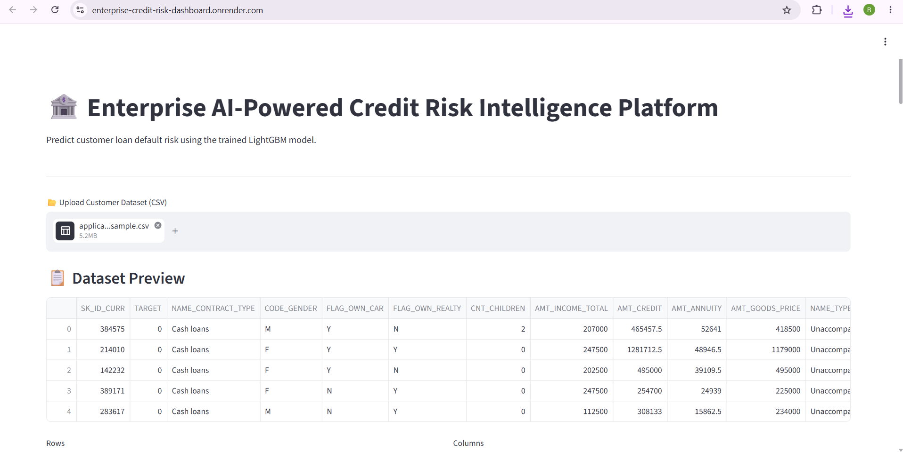
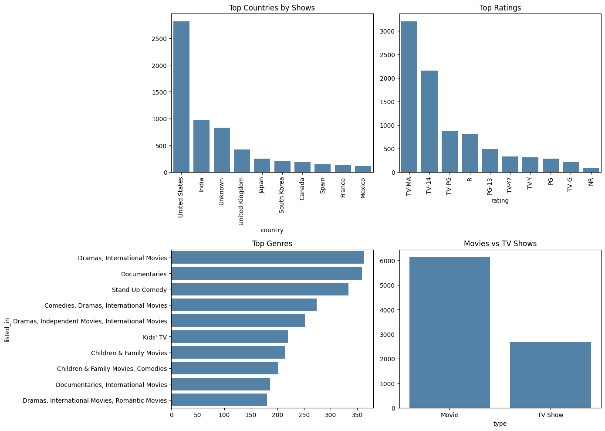
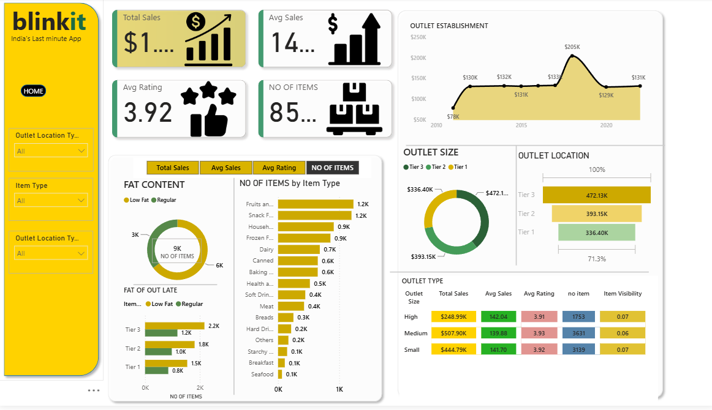

ML
Machine Learning
Scikit-learn · Logistic Regression · Random Forest · XGBoost · LightGBM · Model Evaluation · Predictive Analytics
Building data-driven solutions with Machine Learning, analytics, and intelligent applications — while continuously exploring Deep Learning & Generative AI.
I’m Rahul M, a passionate Data Scientist, Data Analyst, and AI/ML Developer with a B.Tech in Information Technology.
I enjoy transforming raw data into meaningful insights and building intelligent applications that solve real-world business problems. My strongest foundation is in Machine Learning, Data Analytics, SQL, and Power BI, with hands-on projects spanning predictive risk modeling, business dashboards, exploratory analysis, and AI-powered applications.
Currently, I’m expanding my expertise in Deep Learning and Generative AI, strengthening my core ML skills while learning modern AI technologies.
Scikit-learn · Logistic Regression · Random Forest · XGBoost · LightGBM · Model Evaluation · Predictive Analytics
Python · Pandas · NumPy · EDA · Data Cleaning · Feature Engineering · Statistics · Data Visualization · SHAP
SQL · Oracle · Power BI · DAX · Power Query · Excel · Tableau · KPI Analysis · Business Intelligence
Groq API · Llama models · Prompt Engineering · Natural Language → SQL · LLM Applications
Currently expanding: Deep Learning & Generative AIFastAPI · Streamlit · Docker · Git/GitHub · Render · Jupyter · Google Colab
Requests · BeautifulSoup · Selenium

End-to-end loan default risk platform using the Home Credit dataset, with preprocessing, ML prediction, REST API, interactive dashboard, Docker and cloud deployment.

Converts natural-language questions into SQL using Groq and Llama 3.3 70B, executes the query, and turns results into business-friendly insights.

Exploratory analysis of ~8,800 Netflix titles covering ratings, release years, countries, genres, content types, missing values and correlations.

Interactive Power BI dashboard transforming sales data into KPI-driven insights across products, outlets, locations, outlet size, item type and fat content.
Shreenivasa Engineering College, Tamil Nadu
CGPA · 7.9 / 10Salem Mahendra College
Zero arrears throughout the degree · 3rd-highest CGPA in class
PySpiders · 2026
NPTEL — IIT Madras · 2025
IBM SkillsBuild · 2025
IBM SkillsBuild
Deloitte — Forage · August 2026
2026
I’m open to Data Science, Data Analytics, Machine Learning, and AI/ML opportunities.